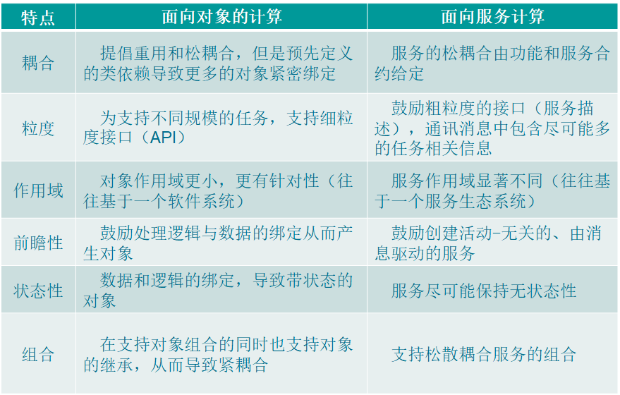
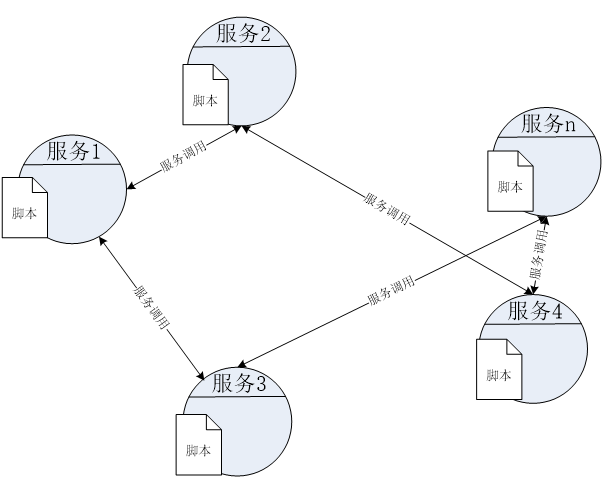
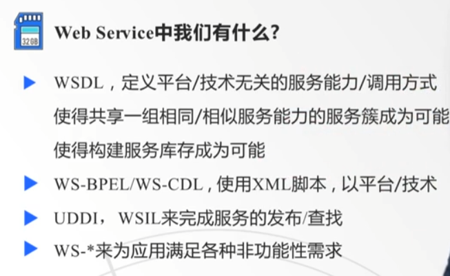
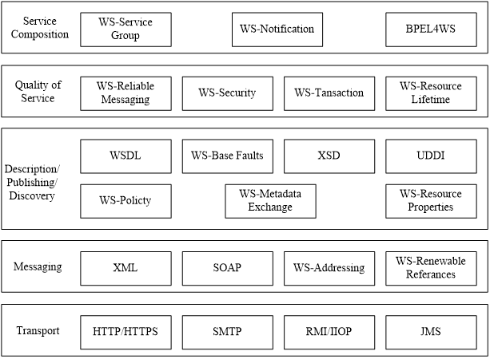

面向服务的软件工程
面向服务的软件工程
1. 服务和服务系统
什么是服务
- 服务是一种时间易逝的、无形的体验，为客户提供，客户在其中扮演共同生产者的角色。
IT和非IT服务
共同特征
- 相同的服务生命周期原则
- 相同的一组服务系统元素
主要区别
- 关键绩效指标（KPI）
- 需求管理
- 变更的速度
搞清楚服务和制造的区别
2. 服务生态系统与面向服务的计算
基于构件的泛型：
- 构件：模块化的、可部署、可替换的软件系统组成部分，它封装了内部的具体实现并对外提供统一接口
- 以构件的创建、构件的管理以及复用已有构件组装形成应用为基本活动
服务组合：由多个装配在一起的服务构成，用以提供对业务任务或过程进行实现的功能
服务库存
服务生态系统
- 垂直服务：可以被同时、独立调用的用于满足消费者需求的服务
- 水平服务：构成垂直服务的可重用的跨领域的公共服务
- 垂直服务与水平服务不互斥
面向服务的计算
面向服务和面向对象的差异（第四张表为设计角度）
- 
3. 面向服务的架构和Web Service
SOA：面向服务的架构
SOA的好处
- IT视角：
- 松耦合，消除假依赖 —— 复用
- 服务间接寻址 —— 灵活
- 企业视角：
- 保护企业投资，提升现有IT资源的作用，促进IT资源的复用
- 提高企业灵敏度
- 支持企业外包管理模式
- IT视角：
SOA分层：
- 业务层、过程层、中间件层、编程层
服务簇
- 一类从概念上服务于同一个业务功能的服务集合
- 服务簇中的服务可以由不同的服务提供者发布，并在具体特性上有差异
- 例如微软和IBM的天气预报服务
编排和编导
- 编排：存在一个作为中心协调者的复合服务用于组织其他服务
- 编导：每个服务持有自己的脚本来指导自己的运作
- 
水平层与垂直层
水平层实现功能性需求
垂直层
Web Service内容
- 
Web Service协议栈
- 
4. XML及相关协议
什么是信息交换
- 在执行领域（业务）相关功能时，各式各样采用电子信息方式编码的信息，在软件单元间的移动
为什么用XML
- 平台中立
- 语言中立
- 基于文本结构
- 能够表达复杂数据结构
服务合约
- 建立了与服务交互有关的术语
- 提供了技术限制和需求，及服务的拥有者希望对外公布的所有语义信息
XML声明规则（符合5+1原则为格式良好的XML文档，合法的XML文档还需要基于一个词汇表用DTD或XML schema定义结构）
- 单根元素：所有XML文档只能有一个根元素
- 元素标签规则：元素以一个开始标签和一个结束标签进行包装
- 元素嵌套规则：在元素的以开始标签和结束标签之间可以嵌套任意数量的子元素或数据
- 元素规则：包括命名规则、元素内容（PCDATA和CDATA）
- 元素属性：属性是一个键值对，必须有值
- [可选]XML声明：出现在第一行，version为必选属性
名称空间
- 为避免冲突，将元素或属性名用URI + 名称表示
- QNames：包含前缀部分和本地部分（如books:title）
XML Schema
DOM Parser、SAX Parser、XSL、XPath、XSLT的选择
DOM Parser:
- 适用于需要完整加载和操作 XML 文档的情况。
- 优点：支持随机访问和修改 XML 树结构，适合处理小型 XML 文件。
- 缺点：内存消耗大，处理大型文档性能较差。
- 场景：需要反复读取、修改 XML 数据时使用。
SAX Parser:
- 适用于逐行解析 XML 文档的情况，不需要加载完整文档。
- 优点：占用内存少，处理速度快，适合处理大型文档。
- 缺点：仅支持顺序读取，无法随机访问或修改数据。
- 场景：只需一次性读取或过滤部分数据时使用。
XSL (Extensible Stylesheet Language):
- 适用于通过样式定义 XML 数据的展示方式。
- 包括 XSLT（转换部分）和 XSL-FO（格式化部分）。
- 场景：需要定义复杂的 XML 文档样式或转换文档为不同的输出格式时使用。
XSLT (XSL Transformations):
- 专注于将 XML 文档转换为其他格式（如 HTML、XML、JSON 等）。
- 基于模板的转换语言，可通过规则匹配实现结构变换。
- 场景：需要从一个 XML 文档生成另一种格式的输出时使用。
XPath (XML Path Language):
- 用于从 XML 文档中提取节点和数据。
- 适合精确定位或过滤特定数据。
- 场景：需要从 XML 数据中快速提取某些字段或执行条件查询时使用。
宏观选择的依据
| 工具/技术 | 适用场景 |
| ————- | ————————————————— |
| DOM Parser | 操作整个 XML 树，支持随机访问和修改，适合小型文档。 |
| SAX Parser | 顺序读取 XML，适合大型文档和高效处理需求。 |
| XSL | 定义 XML 的展示样式或格式化输出。 |
| XSLT | 转换 XML 为其他格式（HTML、JSON 等）。 |
| XPath | 查询、提取 XML 中的特定节点或数据。 |
5. Web Service核心
5.1 SOAP
什么是SOAP
SOAP的结构
- Envelope 元素：必须元素，根元素，标识此 XML 文档为一条 SOAP 消息；可以包含命名空间和声明额外的属性。如果出现额外属性，则必须使用命名空间修饰。
- Header 元素：可选元素，有关 SOAP 消息的应用程序专用信息（比如认证、支付等）。
- Body 元素：必须元素，包含所有的调用和响应信息。
- Fault 元素：可选元素，提供有关在处理此消息所发生的错误的信息
SOAP处理模型
- 用 XML 打包请求：
- 将接口名作为根节点
- 方法和参数作为节点
- 将请求发给服务器：
- 不创建自己的 TCP/IP 信息，利用 HTTP
- 将请求封装成 HTTP POST 请求格式发出
- 服务器收到请求，解码 XML，处理请求，以 XML 格式返回响应
- 与请求比较，方法的节点名字变为请求的方法名后缀
Response（例如，find->findResponse） - 客户程序自己调用了哪个方法，根据方法名后缀
Response寻找调用方法的返回值
- 与请求比较，方法的节点名字变为请求的方法名后缀
- 用 XML 打包请求：
SOAP 通信的两种典型模型：
- 点对点通信：直接从发送方到接收方的简单模型。
- 多跳通信：消息在多个中间节点间传递，最后到达目标接收者的复杂模型。过程中能够在不同网络协议（如 HTTP、SMTP、JMS 等）上进行
文档导向和远程调用的区别
- 文档导向模式
- 一种异步交互方式
- 发送一个完整的 XML 文档，并等待通知。结果会在处理完成后发送回来。
- 适用于复杂业务流程（如订单处理、报表生成），结果不要求实时返回。
- 远程过程调用模式
- 一种同步的请求/响应交互方式
- 发送具体的函数调用及其参数，请求并等待响应。
- 适用于简单任务或需要实时响应的场景（如查询某个数据）。
- SOAP Fault机制
- SOAP 提供了一种模型，用于处理消息处理过程中出现的错误情况。
- SOAP 区分了导致错误的条件和向错误消息的发起者或其他节点通知该错误的能力。
- 通知错误的能力取决于所使用的消息传输机制，而 SOAP 在绑定到底层协议的规范中，其中一个方面就是规定如何通知错误（如果支持的话）。
- SOAP 的错误模型要求所有与 SOAP 相关的错误和与应用程序相关的错误都必须通过一个特殊的元素 Fault 来报告，并且该元素包含在 Body 元素中。
- env:Fault元素包含两个子元素：env:code和env:reason
- NotUnderstood Message
- 在处理 SOAP 消息的过程中，如果某个必需的头部元素无法被理解，或者其中包含的信息无法被处理，则可能会产生一个错误。
处理头部块时的错误同样会通过 env:Fault 元素在 env:Body 中进行通知，但不会使用 Detail 子元素。
相反，SOAP 错误命名空间中一个特殊的头部元素 Misunderstood 会被用来标识引发错误的头部。
- 在处理 SOAP 消息的过程中，如果某个必需的头部元素无法被理解，或者其中包含的信息无法被处理，则可能会产生一个错误。
5.2 Web Service接口定义语言WSDL
WSDL的概念
- 功能：WSDL 对服务能力、服务中使用的数据结构以及传输绑定给出定义和描述；提供了一种基于 XML 的标准接口定义语言/服务能力定义语言，用以在服务的提供者/调用者/服务注册之间，交换必要的有关的 web service 的信息。WSDL 的核心是描述 Web 服务的接口和操作，以及如何访问这些操作的消息格式和传输协议。
WSDL结构
以 description 元素为根节点。
import、include：拼装不同部门/组织定义的文档，形成完整的 WSDL 语义
| 特性 | import | include |
| ———— | ————————————– | ————————————- |
| 命名空间 | 用于导入不同命名空间的定义 | 用于包含相同命名空间的定义 |
| 用途 | 重用其他命名空间的 WSDL 或 XSD 定义 | 拆分当前命名空间内的 WSDL 或 XSD 文件 |
| 属性 | 必须包含namespace和location| 只需包含location|
| 常见场景 | 引入外部服务接口或跨命名空间的数据结构 | 拆分 WSDL 定义以简化管理 |抽象部分：
- Types：使用到的数据结构或者叫数据格式范式，独立于语言和平台
- Interface : operation 的集合，即服务能力的集合，描述服务能力。operation : input、output、infault、outfault
具体部分：
- Binding：特定端口类型的具体协议和数据格式规范的绑定，即把抽象消息格式转化为具体的消息格式（Interface关注服务具体内容，Binding关注如何转换）
- Service：对服务整体的抽象，包含若干个 endpoint。endpoint：在binding和interface间创建映射
MEP：消息交换模式
- 8种预定义，四种基本
Message Dispatch：是一种与 SOAP 消息交换模式相关的机制，用于根据消息内容或格式将请求路由到正确的服务端处理逻辑。它本质上描述了 Web 服务如何根据消息的结构和类型来分发和处理请求。
6. Web Service 扩展
6.1 UDDI
- 概念
- UDDI被用来提供发布和查找Web Service的元服务。它可以用来针对丰富的元信息进行查找
- UDDI采用XML格式，来存放注册Web Service的描述信息
- UDDI结构
- WSDL与UDDI的对应关系
- UDDI的使用
- 对于分类、编目和管理Web服务，UDDI注册库提供了一个标准方式，以便于能够发现和使用这些Web服务
- 业务和提供者可以按标准方式使用UDDI来表示Web服务信息
- UDDI使用SOAP作为它的传输层
- UDDI API是一个接口，可以接受封装在SOAP信封中的XML消息
- 所有的UDDI交互都使用请求/响应模式
- 可以使用出查询API来搜索和读取UDDI注册库中的数据，并可使用发布API来添加、更新和删除UDDI注册库中的数据
- UDDI发布API
- UDDI查询API
- 对于分类、编目和管理Web服务，UDDI注册库提供了一个标准方式，以便于能够发现和使用这些Web服务
6.2 WS-*协议
- BPEL：采用标准协议的XML脚本描述服务组合方式
- Web-Addressing：用于消息分发
- 请求消息
- 元数据中包含WSDL，WSDL包含action以确定要调用的服务，SOAP消息中包含一个全局唯一的会话标记ID和FROM/TO信息
- 响应消息（右下）与请求消息（左上）对应关系
- 请求消息
- WSRF : Web Service 资源框架，用于实现带状态的服务
- WS-Sercurity：通过在SOAP头块中进行相关定义来实现安全性需求
- WS-Coordination：主要包括WSAT（原子事务）和WSBA（商业活动）
7. 服务生态系统的构建
服务生命周期的基本阶段：面向服务的分析、设计，服务的开发、测试、部署、管理
业务逻辑：源于企业业务领域，业务需求的文档化实现
应用逻辑：组织成不同技术解决方案的业务逻辑的自动化实现
服务的层次
- 最上层：编排层
- 中层：服务接口层
- 应用服务：对底层的应用逻辑进行封装的服务
- 业务服务：用于满足服务调用者的业务需求的服务
- 以任务为核心的（业务）服务
- 实体服务

- 编排服务（可选）：对业务服务进行组合形成的新服务
业务服务与编排
- 编排能够组合以任务为核心的业务服务及以实体为核心的业务服务
- 基本的业务模型由以实体为核心的服务来表示
- 与业务逻辑相关的任务由以任务为核心的服务来表示
- 在不影响业务服务和应用服务的前提下进行业务规则和业务逻辑的变更
面向服务的交付策略
- 自顶向下：分析优先
- 定义企业范围的相关本体（领域知识的概念及其关联）
- 将相关的业务模型（包括实体模型）与新的或修订后的本体匹配
- 进行面向服务的分析
- 进行面向服务的设计
- 开发所需服务
- 测试和部署服务
- 自底向上：按需交付，封装并集成遗留系统优先
- 对所需的应用服务进行建模，多为混合（应用）服务，即合并业务服务与应用服务。
- 设计所需的应用服务
- 开发所需的应用服务
- 测试和部署服务
- 自顶向下：分析优先
面向服务的设计
在面向服务设计的过程中，通过从服务候选（逻辑）派生出具体的服务设计（物理），然后装配到实现业务流程的抽象组合中
设计过程
组合SOA
- 选择服务层
- 定位核心的SOA 标准
- 选择SOA 扩展
设计服务
- 设计以实体为核心的业务服务
- 设计应用服务
- 设计以任务为核心的业务服务
- 设计面向服务业务过程
8. 服务设计原则
标准化服务合约
- 概念：使用形式化或者标准化的合约
- 服务合约设计的相关风险
- 版本化：底层逻辑越是可复用，那些需要消费它的程序的数量和消费频率就会越大，拓展难度大，从而导致发布新的服务版本的要求
- 技术依赖：操作性系统层（编程语言和开发平台）的技术性变化导致服务合约变化
- 开发工具缺陷：使用开发工具自动生成合约可能产生非标准化的服务合约
和其他原则的关系
- 标准化服务合约与服务松散耦合
- 消费者和服务之间存在对服务合约中技术接口的依赖
- 技术服务合约越详细，越内容丰富，消费者和服务之间的依赖关系越强
- 两个服务之间所达到的松散耦合程度直接与在服务合约中的依赖关系数量相关
- 标准化的合约将会有助于提高服务之间的一致性和耦合质量
- 消费者和服务之间存在对服务合约中技术接口的依赖
- 标准化服务合约与服务抽象
- 服务抽象原则要求简化合约：非核心信息都被隐藏
- 服务合约的设计决定了抽象的程度：在合约中的内容越仔细，服务中被抽象的信息就越少
- 标准化服务合约与服务可复用性
- 服务可复用性原则常常侧重于服务封装的逻辑是否足够一般和通用
- 可复用方案逻辑与数据交换之间的关系最终要由服务合约是如何设计的来决定
- 服务合约越是通用、灵活和可扩展，服务的长远复用潜力就越大
- 标准化服务合约与服务可发现性
- 服务合约越是得到一致的标注和结构化，对于那些需要使用它们的人来说就越是可以预测的
- 服务合约越是标准化，元信息的技术接口细节提供得越是充分，服务的可发现性就越高
- 标准化服务合约与服务可组合性
- 服务的可组合性需求常常与服务合约表达其能力的粒度有关
- 粗粒度的操作拥有更高的效率，但常常不适应于需要参与到更大规模组合中的服务
服务松散耦合
- 概念：调节技术合约内容的数量和复杂度，从而最小化消费者依赖需求
- 服务合约耦合类型
- “逻辑-合约”耦合(积极)：首先设计合约，然后再设计底层的方案逻辑。允许对底层逻辑进行微调以支持服务合约
- “合约-逻辑”耦合(消极)：从现有的方案逻辑当中生成Web Services
- “合约-技术”耦合(消极)：有的时候服务是作为传统专用组件存在的，这就需要服务合约与服务相关的通信技术紧密地耦合
- “合约-实现”耦合(消极)：实现相关的特性和细节在服务合约的内容中体现出来
- “合约-功能”耦合(消极)：由一个服务所封装的逻辑被专门设计为支持服边界之外的功能体
- 服务消费者耦合的类型
- “消费者-实现”耦合(消极)：绕过服务合约，直接使用其他入口访问服务
- “消费者-合约”耦合(积极)：采用合约集中化，将对服务的访问控制在合约内
- 可能的风险
- “逻辑-合约”耦合的限制
- 同一底层逻辑对应两个或者多个合约，从而建立多个入口，每一入口向不同类型的消费者暴露不同的服务能力
- Schema 耦合太“松散”：
- 为了强调服务的兼容性演化能力，通过过分简化服务合约，追求减少消费者依赖，仅确定了一些非常通用的数据类型（弱类型）
- 验证并处理弱类型，增加服务所需的性能要求
- 服务合约发布的信息越少，消费者程序就需要知道越多关于服务实现逻辑的信息，从而产生消极耦合
- “逻辑-合约”耦合的限制
和其他原则的关系
- 服务松散耦合与标准化服务合约
- 松散耦合鼓励调节技术合约内容的数量和复杂度，从而最小化消费者依赖需求、最大化服务所有者的自由度，在不影响现有消费者的情况下随着时间演化和改变服务
- 服务松散耦合与服务抽象
- 创建更低耦合的消费者关系，明确地要求应用良好定义的功能和技术抽象级别
- 服务松散耦合与服务可复用性
- 减少依赖关系可以使服务更容易被组合、演化甚至扩充以支持不断变化的业务需求和方向
- 服务松散耦合与服务自治
- 减少消极耦合类型的程度，会为运行时和设计时的更高自治级别提供支持
- 服务消费者具有越多的跨服务依赖，它所具有的自主权就越少（服务消费者可能同时担任复合服务中的服务协调者）
- 服务松散耦合与服务可发现性
- 服务松散耦合有助于元数据的调节
- 服务松散耦合与服务可组合性
- 在服务组合中，避免消极形式的耦合
- “合约-逻辑”耦合 如果服务合约是自动生成的，就很有可能在被其他服务使用时不符合标准。因此需要在它和其他组成成员之间进行转换
- “合约-技术”耦合 如果同一个组合中的不同部分同时使用开放与专用服务技术，就会需要在本地实现技术转化层
- “合约-实现”耦合 当一个服务合约与底层实现特性之间产生耦合时，就会最终把这些性质强加到作为一个整体的组合之上
- 在服务组合中，避免消极形式的耦合
服务抽象
- 概念：获得信息隐藏的正确平衡点，即对哪一部分服务信息进行隐藏，哪一部分公开
- 可能的风险
- 多消费者耦合的需求：不同消费者可能需要不同的技术接口细节，所需的抽象程度也不尽相同
- 人为误判
- 过于抽象的服务合约导致曲解或不能充分理解一个服务。从而丧失潜在的复用机会
- 过于具体的服务合约导致对服务的行为作出与服务实现相关的假设，从而导致实现耦合
- 安全和隐私的考虑：服务合约可能暴露私有或者敏感信息
和其他原则的关系
- 服务抽象与标准化服务合约
- 服务抽象出来并对外界可用的信息就是服务合约，服务抽象原则的应用影响到服务合约
- 服务合约的设计标准也会影响到功能、技术和逻辑抽象的等级
- 服务抽象与服务松散耦合
- 抽象的程度对可能耦合的程度有直接的关系
- 少量的高度详细的技术接口约束会导致比大量含糊或开放的数据约束更多的紧密耦合需求
- 耦合的程度一般由被抽象的信息数量和信息本身的属性的组合来决定
- 最终由服务合约的粒度加以体现
- 服务抽象与其他原则
- 其他的服务设计原则，如服务可复用性、服务可组合性和服务可发现性等原则都鼓励创建更多的、关于服务的元信息
- 而服务的抽象原则要求在发布这些元信息前评估其必要程度
服务可复用性
- 概念：尽可能让服务被更多地复用
- 可能的风险
- 文化上的考虑
- 当项目团队被要求遵守特定可重用服务的逻辑集中化时，会出现常见的文化问题
- 治理上的考虑
- 面向服务将相互无关的逻辑单元抽象为服务，与业务流程、应用程序或用户基础都没有任何直接联系
- 可靠性上的考虑
- 可复用服务的单点失效会导致多个业务流程的失
- 通过对关键服务的多重复用来解决
- 安全上的考虑
- 在不同应用场景中的安全性要求不同
- 安全级别可能和信息交换的方式直接相关，甚至可能和服务合约所暴露的功能类型相关
- 商业设计需求上的考虑
- 领域专家在进行服务分析和建模阶段中引入的风险和问题
- 敏捷交付上的考虑
- 在需要以敏捷开发方法来解决短期和战术上的业务目标时，提倡服务的可复用性是非常困难的
- 文化上的考虑
和其他原则的关系
- 服务可复用性与标准化服务合约
- 可复用的服务需要足够的灵活性来支持带有不同交互需求的消费者
- 导致降低合约验证约束（尤其是那些易变的）的设计标准
- 服务可复用性与服务抽象
- 合约的自描述性与简洁之间的平衡
- 元信息的抽象程度反映这一平衡
- 服务可复用性与服务松散耦合
- 一个服务的依赖需求越小，复用它就越简单
- 当追求服务逻辑的可复用性时，总是有一种减少服务合约约束的趋势
- 服务可复用性与其他原则
- 服务自治
- 自治是对可复用服务潜在高性能和并行使用的保证
- 服务无状态
- 通过最小化状态管理责任，提高一个服务的可用性，从而提高有效扩展的能力
- 服务可发现性
- 可复用服务必需可发现、可解释
- 服务可组合性
- 可组合是复用的一种形式，可复用潜能越大，服务被反复组装的机会就越大
- 服务自治
服务自治
- 概念：服务的自治，表现了它可以独立执行自身核心服务逻辑的能力
- 分类
- 共享自治
- 部分隔离服务：只共享数据库、目录等资源
- 完全自治
- 功能隔离：服务构件和物理数据模型是专用的，但是服务位于一个与其他服务共享的服务器上
- 绝对隔离：服务构件和相关的数据模型都位于专用服务器上
- 设计时隔离：从设计开始，就对服务设计、数据模型和宿主环境等，拥有完全的管理权
- 可能的风险
- 错误地判断服务的范围
- 包装服务和遗留逻辑封装：无法改变的自动化系统无法回避自治问题
- 对服务需求的过高估计：过于追求高自治
和其他原则的关系
- 服务自治与标准化服务合约
- 服务合约自治直接与服务合约紧密相连
- 规范化的考虑会影响到合约如何形成，以及如何与其他服务协调
- 在服务合约上有越大的控制权，服务合约能被更好地定制和标准化，越能够确保底层实现可以在遵循既定自治级别的前提下，被独立设计
- 服务自治与服务松散耦合
- 由于同样期望将服务之间的依赖最小化，服务自治在很大程度上支持服务松散耦合原则
- 积极耦合会直接导致设计时自治的增加；设计时自治的增加，又能更好地增强和优化服务的实现，从而持运行时的自治
- 由于同样期望将服务之间的依赖最小化，服务自治在很大程度上支持服务松散耦合原则
- 服务自治与服务抽象
- 将一个服务的自治级别作为整个服务合约的一部分来发布
- 服务自治的信息是服务质量信息抽象的一个例子
- 服务自治与服务可复用性
- 自治的增加提高了一个服务的复用潜力
- 通过增强服务的可靠性和提高服务行为的可预测性，其逻辑可以更加容易地适应多个服务消费者的需求
- 更好地支持服务运行环境的演化，从而应对复用所带来的并发要求
- 服务自治与服务无状态性
- 实现高级别的服务自治可以直接支持服务无状态性程度的增加
- 服务自治与服务可组合性
- 服务组合的整体自治性取决于它的所有组成成员自身的自治性
- 服务有越好的可靠性和可预侧性就越能组成更高效的大型服务组合
服务无状态性
- 概念：服务要尽量减少对状态信息的保存，从而减少资源消耗，满足尽可能多的消费者程序的需要
- 可能的风险
- 对于架构的依赖
- 要建立服务设计和一个外部状态延迟选项的相互依赖关系
- 需要权衡这种依赖关系和延迟状态所带来的好处
- 增加的运行时性能需求
- 在从无状态到有状态进行切换时，可能会需要找回、解析然后再在服务中执行状态数据，引入额外的性能开销
- 低估交付代价
- 特定于活动的数据需要在运行过程中被接收、解析、处理和延迟，包含复杂的算法和例程。这不仅会带来额外的设计考虑，还伴随着确保该服务能够处理大量可能的情况和大量的活动数据所需要的编程和测试的代价
- 对于架构的依赖
和其他原则的关系
- 服务无状态性与服务可复用性
- 减少活动相关逻辑使一个服务变得更加无关（而无关服务具有更好的可复用性）
- 提高服务的可扩展性和可用性使得它们可以在更多的服务组合中被更多的服务消费者复用
- 服务无状态性与服务自治
- 状态信息的本质通常是特定于一个给定的活动或者业务流程的，通过在服务边界外改变状态管理机制和流程的职责，就可以降低服务逻辑依赖于更大的业务任务的可能性。这使得服务能够更加自给自足，并且能够被定位成技术环境的一个独立部分，因而直接增加其整体自治性
- 另一方面，由环境架构所提供的状态管理延迟选项可要求服务形成在其边界外的一个直接依赖。这种类型的外部实现耦合会影响到一个服务的整体自治
服务可发现性
- 概念：帮助调用方确定得要完成的自动化需求是否已经存在于服务库存中
- 可能的风险
- 可发现性在实施后的应用
- 在服务定义完毕后，再记录元数据，甚至由其他人员来加以记录，从而导致发现性和可解释性元数据的质量的损失
- 应当在设计阶段，早于服务最初发布时，就把那些元信息添加到文档中
- 由不擅交流的人员来应用本原则
- 如果可发现性信息仅仅是由业务或者技术专家创建的，那么它很可能不足以应付其他的项目组成员的使用
- 可发现性在实施后的应用
和其他原则的关系
- 服务可发现性与标准化服务合约
- 使服务更加容易可发现和可解释会影响服务合约的内容
- 服务可发现性会直接地影响功能表达设计标准的确定
- 服务可发现性与服务抽象
- 服务抽象的原则需要减少合约当中所发布的信息数量；服务可发现性则要求提供更多的信息；两者之间需要取得平衡
- 一旦实现了可发现性和抽象之间的适当的平衡，那么随后实现的服务的可发现性将基于那些已发布的（而不是被抽象的）元信息
- 服务可发现性与服务可复用性
- 强调服务可发现性的主要目的是支持服务可复用性
- 当表述可复用功能时，应当应用可发现性相关的设计标准，以保证能通过实际的技术合约把服务的目的和能力尽可能清楚地表述出来
- 服务可发现性与服务可组合性
- 潜在的组合成员应当容易定位和识别，以避免在无意间创建冗余的服务逻辑
- 当服务组合为了适应上层业务流程的变化或者为了增加整体的业务需求实现而发生演变时，需要查找从组合的原始版本创建以来，新加入的服务和功能
服务可组合性
- 概念：让服务可以被其他服务组合，或通过组合其他服务来实现设计需求
- 可能的风险
- 组合成员成为单点失效的源头
- 组合成员成为性能瓶颈
- 对于组合中“过度复用”所带来的治理强度
和其他原则的关系
- 服务可组合性与标准化服务合约
- 服务可组合性的应用强调服务间需要一致的合约标准
- 由服务可组合性原则引起的考虑可以用来帮助形成服务合约设计标准，以便支持特定于组合（尤其是复杂的组合）的需求。
- 服务可组合性与服务松散耦合
- 服务所具有的依赖关系会造成一些根本性的约束，直接制约服务能够达到的可组合性级别
- 服务可组合性与服务抽象
- 当抽象被应用到复杂组合被隐藏的程度时，对这些组合高效可靠地执行的要求被大大放大。作为回报，组合所有者可以更好地控制如何改进组合配置。
- 服务可组合性与服务可复用性
- 当一个成熟的服务库存建立起来的时候，服务组合就成为最常用的服务复用方式
- 可复用但不可组合（参与多个点对点活动）
- 可组合但不可复用（很高的“服务-消费者”耦合）
- 当一个成熟的服务库存建立起来的时候，服务组合就成为最常用的服务复用方式
- 服务可组合性与服务自治
- 这两个原则之间是“整体-部分”的关系
- 控制器服务在组合其他服务时需要牺牲其自治性（等价于对所有涉及的服务组合成员的自治性的综合度量结果）
- 服务自治性的提高有助于产生高效的组合成员
- 服务可组合性与服务无状态性
- 尽可能地减轻每个组合成员在状态管理方面的责任，可以更精细、更优化地执行整体的组合实例
- 为了能够在同一个服务库存中重复地装配出高效的服务组合，服务之间需要能够通过一致并且有效的方式共享状态数据
- 服务可组合性与服务可发现性
- 作为组合控制器的服务能力可以负责描述它所封装的整个组合逻辑，并达到服务抽象原则所允许的任意程度
9. Web开发部分
JAXB如何做类型映射和操作XML？
- JAXB是 Java 提供的一个框架，用于将 Java 对象与 XML 数据相互转换（即序列化和反序列化）。它通过自动生成的映射类和注解来简化操作 XML 的过程。
- Java到XML的映射
- 使用 JAXB 注解 来控制映射细节
JAX-WS的三种开发模式
- Start from Java
- 这是最简单的开发方式，先编写 Java 类，然后通过工具生成 Web Service 和 WSDL 文件。
- Start from WSDL
- 这种模式是先定义服务契约（WSDL 文件），然后生成 Java 代码。
- Start from WSDL and Java
- 从 WSDL 和 Java 混合开发
- 需要在服务契约和业务逻辑之间找到平衡，既要对 WSDL 进行自定义，又希望减少开发工作量。
- Start from Java
CLient端和Server端的exception
客户端（Client）端的两种异常
SOAPFaultException- 这是客户端在调用服务端时收到的 SOAP 错误响应。
- 发生场景：当服务端返回的响应中包含了 SOAP 的
Fault元素时，会在客户端抛出该异常。 - 特点：
- 表示服务端处理请求时发生的逻辑或应用级错误。
- 客户端通过
getFaultCode()和getFaultString()方法可以获取错误的详细信息。
WebServiceException- 是 JAX-WS 中的通用异常，表示客户端无法成功调用 Web 服务。
- 发生场景：
- 通信错误（例如无法连接服务端、超时等）。
- SOAP 消息格式错误。
- 客户端处理响应时遇到错误。
- 特点：
- 是一个运行时异常（RuntimeException）。
- 可以通过
getMessage()方法查看异常的描述信息。
服务端（Server）端的三种异常
SOAPFaultException- 服务端主动创建并返回给客户端的异常，表示服务端在逻辑处理时遇到了问题。
- 发生场景：服务端检测到业务逻辑问题或其他错误，需要向客户端返回详细的 SOAP 错误信息。
- 特点：
- 服务端在代码中可以主动抛出
SOAPFaultException。 - 在响应中以 SOAP 的
Fault元素返回。
- 服务端在代码中可以主动抛出
ProtocolException- 表示通信协议（如 HTTP 或 HTTPS）层出现问题。
- 发生场景：
- 服务端接收到的请求在传输层有问题（例如 HTTP 头错误）。
- 服务端响应消息的协议部分不符合规范。
- 特点：
- 这种异常可能不会明确反馈给客户端，而是在服务端日志中捕获。
WebServiceException- 服务端的通用异常，表示服务端处理请求时遇到了不可恢复的错误。
- 发生场景：
- 内部逻辑错误（例如数据库连接失败）。
- 服务端无法解析客户端的请求。
- 服务端配置错误。
- 特点：
- 也是一个运行时异常。
- 通常会被框架捕获，或者通过 SOAP
Fault元素反馈给客户端。